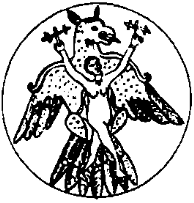

Bu konuşmaların hemen ertesi günü Müslüman oldum. Sanki Maşiahlık gemisi tam batarken kendimi bir tahta parçasının üstüne atıvermiştim. Başrav’ın Müslümanlığına, dalga geçmek dışında tepkisiz kalan budun, benim din değiştirmem üzerine, yel yemiş deniz gibi çalkalanıp dalgalanmaya başladı.
Ben Tengere Tardu, eski Köktürk hanlarının özünden, Bilge Kağan’ın soyundan gelen kağan, Musevi Hazarların, Kınık ve öteki boyların Maşiah’ı, tam olarak 988 yılının mayıs ayının kutlu on üçüncü pazar günü, Cend Ulu Camii dedikleri kerpiç kulübede, Tat imam Şemsüddin Ahmed Dihkani önünde şahadet gelirdim ve yeni dine ilk adımımı attım. Elli sekiz yaşımın içinde dinç bir yaşlıydım. Musevilikten geldiğim için, o yaşta sünnet kaygısı çekmeden, gönül dinginliği ile yeni dine geçtim. Daha önce de olmuştur belki, kağan ya da kayser kimse, bir yoksul Maşiah’ı zorlamıştır, o da korkusundan din değiştirmiştir. Benim durumum, kağan da Maşiah da ben olduğum için biraz karışıktı. Kağan olan yarım, Maşiah yarıma baskı mı yapmıştı? Maşlahlarının din değiştirmesi, budun üzerinde değişik etkiler yaptı. Kimi benim zaten bu görevle taa Hangay’dan kalkıp Hazar’a gittiğimi, budunu alıp buraya getirdiğimi, belalardan kurtardığımı ve doğru yola koyduğumu söylüyordu. Diğerleriyse, bir sahte Maşiah uğruna dinlerini değiştirmeyeceklerini, kağanlık yanımı düşünerek değiştirmiş görünseler bile doğru dinlerine, günlerin sonuna dek değil, sonsuza kadar bağlı kalacaklarını belirtiyorlardı.
Benim Müslüman olduğum günlerde Oğuz bozkırından gelen bir haber herkese yeniden parmak ısırttı. “Maşiah, Maşiah” sözleri “Mesih, Mesih” olarak yeniden hortladı. Aktürklerin bilicisi olduğum bir daha onaylandı. Salur Kazan, o koca kurt, o kadar kan içmesinin bir ödülü olarak yatağında barış içinde ölmüş, yabguluk, Salur’un elinden çıkmış, Yazır boyunun hanı, Ali Han’a geçmişti. Adından da anlaşılacağı üzere Ali Han, benim gibi bir Müslümandı. Ali Han’ın, Kılıç Arslan diye de tanınan Şahmelik adlı bir de yetişkin oğlu vardı. Ali Han, büyük bir yüzsüzlükle Şahmelik’i Cend kentinin valisi olarak atamıştı. Benim birkaç yıl önce, “siz olmazsanız olacaklar var” dediğim olay olmuştu. Yerinden oynayan Kıpçak boylarının kuzeyden bastırmasıyla Oğuz, İran dünyasına girmeyi kurmaya başlamış, onların içinde de biri aynı benim gibi düşünmüş, bu işin Müslüman olmayı gerektirdiğini anlamış ve çevresine anlatmıştı. Yağımız olan Oğuz’un Müslüman olması, bizim budundaki tartışmaları saman alevi gibi söndürüverdi. Bir iki ay içinde bizde Müslüman olmayan kalmadı. Artık kim gerçekten Müslümandır kim değildir, ölçmüyorduk ki bilelim. Aslında geç bile kalmıştık. Biz de, Ali Han’ın Oğuzu da Müslüman olduğumuza göre, artık bütün Müslüman devletlerin desteğine kafadan sahip değildik. Bazıları bizi, bazıları onu destekleyecekti. Haber, yine de Doğu İran dünyasına yanar od gibi düştü. Oğuz bozkırının sınırlarında Tengere Han’ın Müslüman olması az şey değildi. Beş on bin Aktürkün Müslümanlığa geçişi Bulgarların veya Karlukların Müslüman oluşundan tabii ki çok daha önemliydi. Haber suya atılan bir taşın yarattığı dalgalar gibi yayıldı.
Bu din değiştirme olayından sonra, artık diğer yapacağımı yapabilirdim. Bayındır’ın yaşadıklarını ben yaşamayacaktım, aileme de yaşatmayacaktım. Bu gen acunda bir düşe tutsak olmayacaktım. Kengeş değil, yalnızca bir aile toplantısı buyurdum. Oğullarım, kızlarım, güveyilerim, torunlarım, hepsi geldi. Cend’in orta yerindeki büyük evime doluştular. Otağımın kurulu olduğu dama çıkmalarını istedim. Hepsi ne diyeceğimi merak ediyorlardı. Urum’a göç mü buyuracaktım? Kağanlığımızda olmayan bir inallık, bir veliahdlik mi uyduracaktım? Ne olacaktı? Selcük’ün elinden tuttum, birlikte ak keçe otağın başköşesindeki tahta çıktık, oturduk. Sözü hep baştan söylerim, girintisini çıkıntısını sonra konuşuruz. Yine öyle oldu. Konuştum:
“Çocuklarım, size daha önce, çok önce, henüz çoğunuz ortada yokken, Sarkel kenti alev alev yanarken vardığım bir kararı açıklamak istiyorum: Gözünüz aydın! Bizim bir hanedanımız olmayacak, benden sonra hiçbiriniz taç ile taht ile uğraşmayacaksınız. Düşündüm ve bunun değmez, boş bir iş olduğunu anladım! Size bu kötülüğü yapamam. ‘Tengereli’ diye bir sülale kurmamaya karar verdim.”
Derin bir sessizlik oldu. Kızlar kendi aralarında oldukça saygısız “bunadı bu iyice” işaretleri yaptılar. Erkekler gülümseyerek dinliyorlardı. Müslüman olduktan sonra kısa, güzel bir sakal bırakan ve Tat İmam’la pek içli dışlı olan Arsılan İsrail, aynı onun ağzıyla:
“Han Bahamız, emr-i hak vaki olduğunda, Tanrının dediği olduğunda, atının kuyruğunu kesip, aşını verdiğimizde ne yapacağız biz? Oturup Şahmelik bizi kessin diye bekleyecek miyiz? Birimiz buduna baş olmayacak mıyız? Boyları dürüp, toplamayacak mıyız?”
“Oğlum, olmayacaksınız. Budunun başı kimse ona uyacak, herkes gibi yaşayacaksınız. Köktürklerin beş yüz yıl boyunca güç ile uğraşmalarının bir sonu olması kaçınılmazdı. Bir an önce olmasında yarar var. Bunun benim sağlığımda olduğunu görürsem mutlu olurum. Ne olacaksınız, başınıza neler gelecek diye kaygılanmam.”
Musa İnanç,
“Han Babamız, peki bizler ne yapacağız? At deve yetiştirip, daha kötüsü arpa buğday ekip elin soysuzlarına vergi mi vereceğiz? Tanrı savsın, yatık mı olacağız? Ekmeğimizi akından çıkarmayacak mıyız? Savaş alanlarında alıp vermeyecek miyiz?”
“Aferin oğlum! Anlamaya başladığınıza sevindim!”
“Peki budun ne olacak? Derleyip topladığın, bir araya getirdiğin budun ne olacak? Budun olmazsa doğru dini kim yaşatıp koruyacak?”
“Budun bir sudur. Yol bulduğunda akar, kendini yönetecek adamı bulur. Nasıl ki işlerine öyle geldi, bizimle birlikte oldular, yarın da başka yerde olurlar, başka tuğun altında dururlar. Siz hanedan olsanız da olurlar. Ne biliyorsunuz ki budunun gönlü her çağda sizde olacak? Bu arada hangi doğru dini oğlum? Müslümanlığı mı?”
Sorumdaki alayı hiçbiri kaçırmadı. Çığlık çığlığa hepsi birden,
“Sen bunun için mi bizi Müslüman ettin? Bu muydu düşündüğün” diye bağırmaya başladılar.
Genelde sessiz bir kız olan Raşel Aba Çiçek,
“Tengere Han” dedi kızgınlıkla, “Bizler ne olalım? Sürünelim, sürülelim, asılalım kesilelim mi? Kılıç Arslan, senin kaza benzer kızını, gelinini çıplak göğsünde mi oynatsın? Bu ne menem sözdür? Bu ne biçim iş seninki?”
“Yavrucum, tam aksine, sizleri düşündüğüm için sırtınızda böyle ağır bir yük bırakmak istemiyorum. Asıl, güç ile oynarsanız bu dediklerin ve daha kötüsü gelecek başınıza. Bak, biz köylülerle, göçebelerle mi kapışıyoruz yoksa beylerle hanlarla mı? Bayındır Han basit bir göçebe olsaydı öyle mi olurdu? Biz bozkırın yoksul göçebeleri olsaydık Salur Kazan üzerimize yirmi yol asker çeker miydi?”
“Han Baba! Erlerimiz, Tanrı yazdıysa bozsun, karı gibi yatakta mı ölecek?”
“Yavrum, gökten inen yedi başlı yılanı kılıcı ile paralayan, dik yamaçtan yuvarlanan kayayı uyluğu ile tutan Salur Kazan gibi bir kurt yatakta öldü de senin ercegizin Üpgük Küdegü niye yatakta ölmesin?”
Kahkahalar otağda öyle çınladı, Raşel’im öyle kızıla kesti, henüz yirmi yaşında bile olmayan damadım Üpgük, ümüğüne basmışlar gibi öyle morardı, sonra öyle sarardı ki, içimden “Tengere! Bir daha üzme çocuklan” dedim.
Lior Bibi, bir önceki sözlerime dönerek gülüşmeleri kesti:
“Han’ımız bu işi çok düşünmüşsünüz, iyi de düşünmüşsünüz. Cend şarı çevresinde ne diye karda kışta at teptiğiniz anlaşıldı. Yalnız her şeyi anlayamıyor, hızınıza yetişemiyoruz. Ne demek 'daha kötüsü’?”
“Kızcağızım, kimin kağan olacağını sanıyorsunuz ben öldükten sonra? Bunlar arasında hangisinin kağan olacağı alnında mı yazıyor? Birbirlerine girmeyecekler mi kimin kağan olacağını tartışırken? Haydi sorun bakalım, içlerinden biri diğeri için çekiliyor mu yarıştan?”
Çıt çıkmıyor hiçbirinden. Damatlarım zaten yol yordam bilen çocuklar. Ne dersem diyeyim, henüz önümde ağızlarım açtıklarını görmedim. Bizim ağzı kalabalık, geçmişi Tengerelilerden de çıt çıkmıyor. Sıkıntıyla önlerine bakıyorlar. Arsılan, eğri kılıcıyla oynuyor.
O ana kadar suskun kalan Selcük söze karıştı:
“Canım bir durun bakalım. Bulunur bir çaresi. Sağlığın yerinde. Şimdiden durduk yerde iş çıkarma başımıza. Zamanı gelince düşünülür. Bozma ağzımızın tadını. Ne oldu şimdi? Göz mü var nedir üzerimizde!”
İş bu noktaya gelince bana artık yapacak bir şey kalmadı. Hepsinin gözlerinin içine bakarak,
“Eh, kendinize çok güveniyorsunuz. Yaparız diyorsunuz. Ben söyleyeceğimi söyledim. Yapın da görsün o zaman budun! Ben yarından tezi yok gidiyorum. Varsayın ki Tengere Tardu Han şimdi şu anda öldü. Yapın yapacağınızı. Kurun evinizi! Geçmişi karanlık, geleceği bulanık Tengereliler sizi!” dedim.
Darmadağın oldular. Hepsi benim iyice delirdiğimi düşünüyordu. Elimi çabuk tutmalıydım. Yoksa gideceğime akılları keserse, elimi kolumu bağlayıp, otacıları, bahşıları başıma sarabilirlerdi. Kendimi zincire vurulmuş, damarlarımdan kan alınırken, kafama kaz pisliğinden yapılma yakılar yapıştırılır, tutsun diye birazı yutturulurken kurdum. Çocuklarım, ellerini iki yana açarak, “Han delirdi. Hanı albızlar tuttu, bırakmıyor!” diyorlardı hayalimde. Kendi kendime mırıldandım, “hem de çok çabuk tutmalıyım, ivmeliyim, uçmalıyım!”